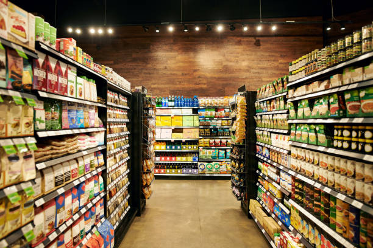

Fresh snacks and essential groceries right next to your campus
Labzak Minimarket is a convenient local shop serving university students and the nearby neighborhood.
Operating since 2020, we pride ourselves on providing friendly service and fresh products every day right around the corner.

Why shop here
- Two minutes from the university gate
- Open until 22:00 every day
- Card, cash and phone top-ups
- Free delivery on big orders